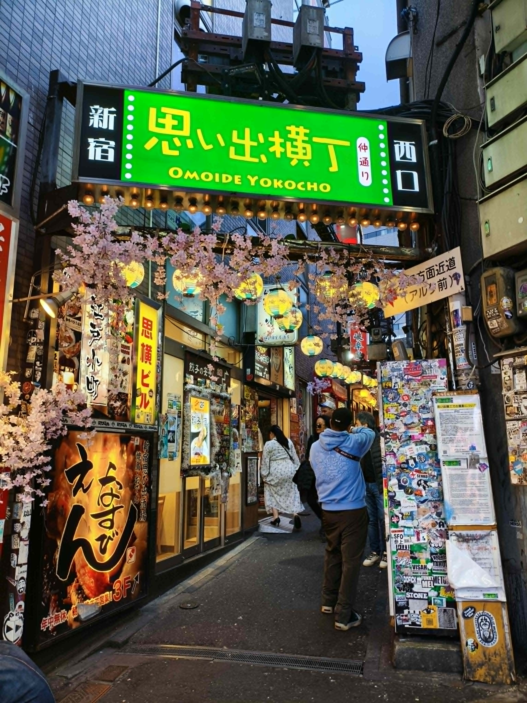
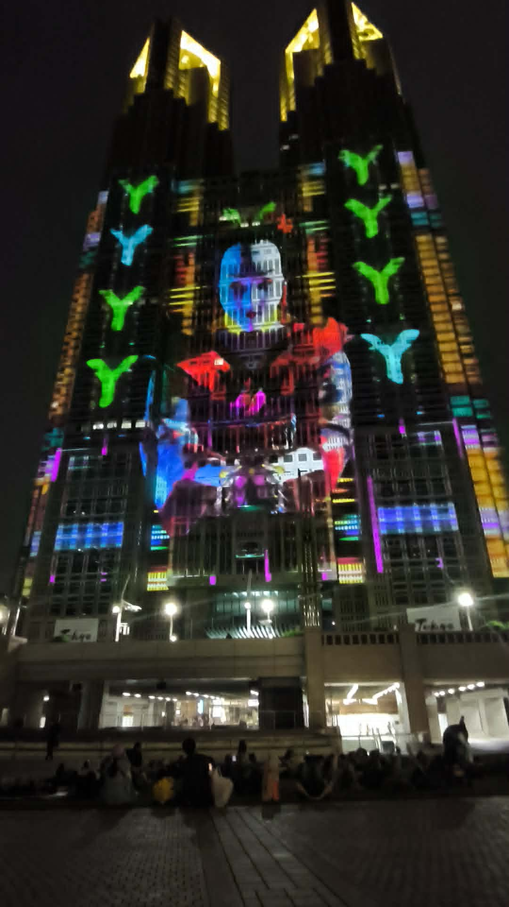
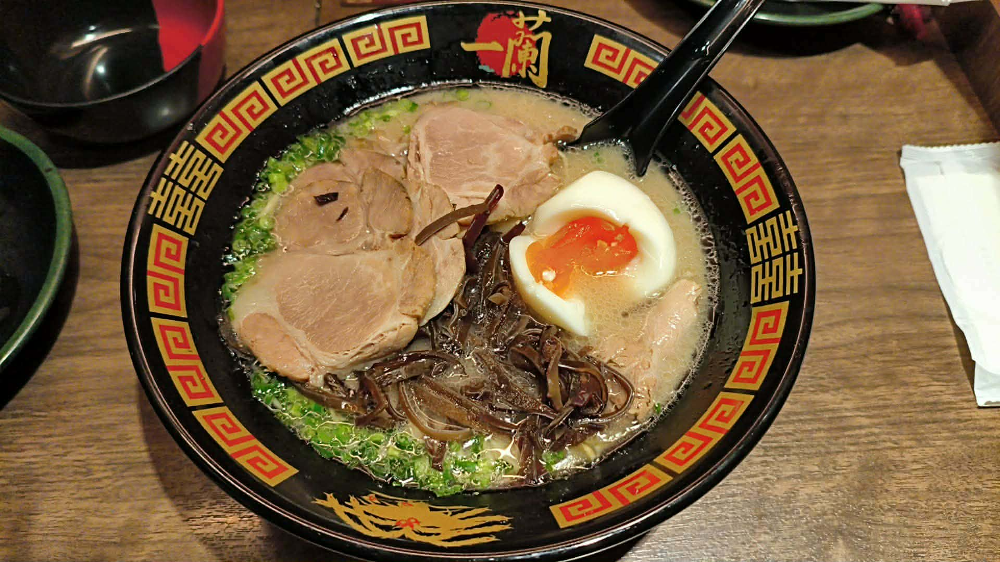
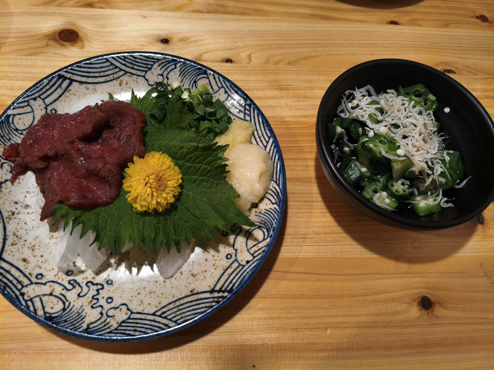
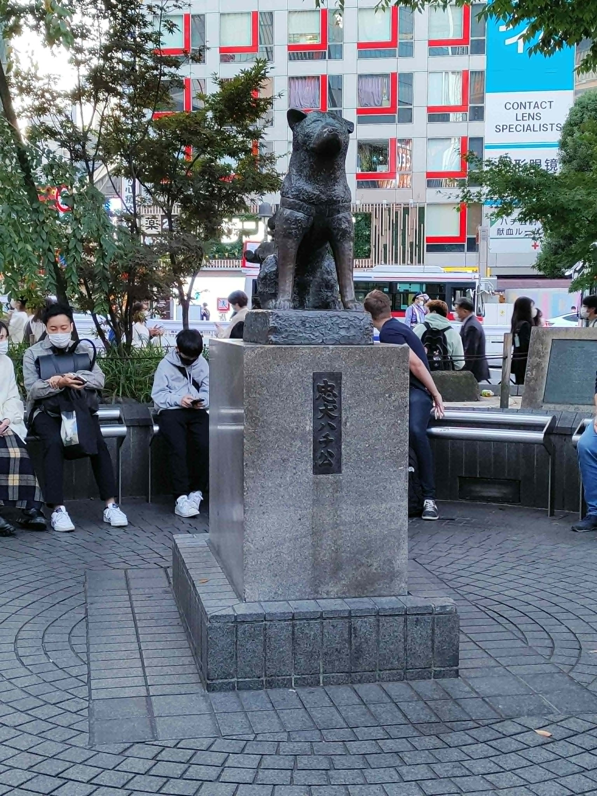
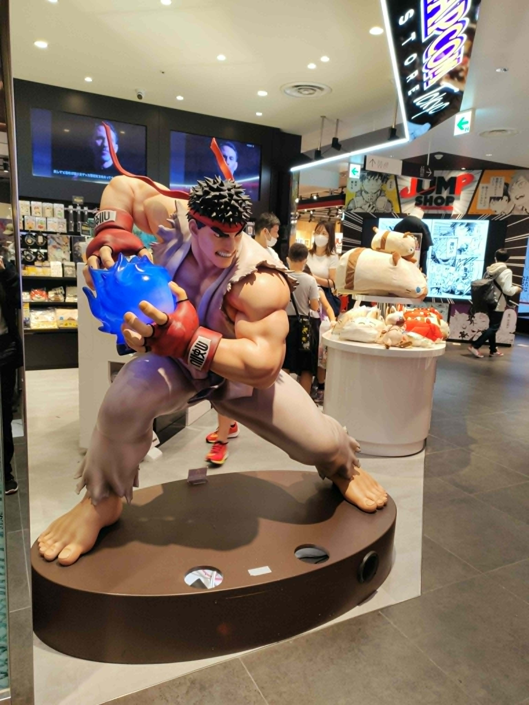
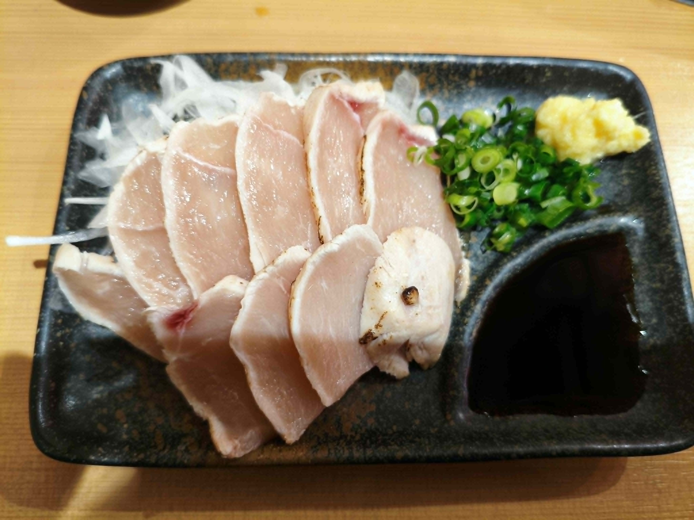

東京案内書
— TOKYO TRAVEL GUIDE —
エリアを選ぶ
01
新宿
Shinjuku
 無料
無料
Fire Museum
消防博物館
江戸から現代まで消防の歴史を体感
 無料
無料
Tokyo Metropolitan Gov.
東京都庁展望室
地上202m、東京を一望するパノラマ
無料
Peace Memorial Museum
平和祈念展示資料館
戦争と平和の歴史を伝える静かな場所

グルメMemory Lane
思い出横丁
昭和の雰囲気が漂う屋台横丁

夜景Night Illumination
TOKYO Night & Light
夜の東京を彩る幻想的な光のショー

ラーメンIchiran Ramen
一蘭新宿中央東口店
一人で味わう至極の博多とんこつラーメン
02
池袋
Ikebukuro

居酒屋Uokichi Sakaba
魚吉酒場池袋店
新鮮な海の幸と日本酒が楽しめる居酒屋
03
渋谷
Shibuya

観光Hachiko Statue
忠犬ハチ公像
渋谷のシンボル、忠犬ハチ公の待ち合わせ場所

ショッピングShibuya PARCO
渋谷 PARCO
アートとカルチャーが融合する複合施設
04
上野
Ueno

焼肉Tori Hibiki-chan
鳥焼肉鳥ひびきちゃん
こだわりの鶏料理と焼肉が楽しめる人気店